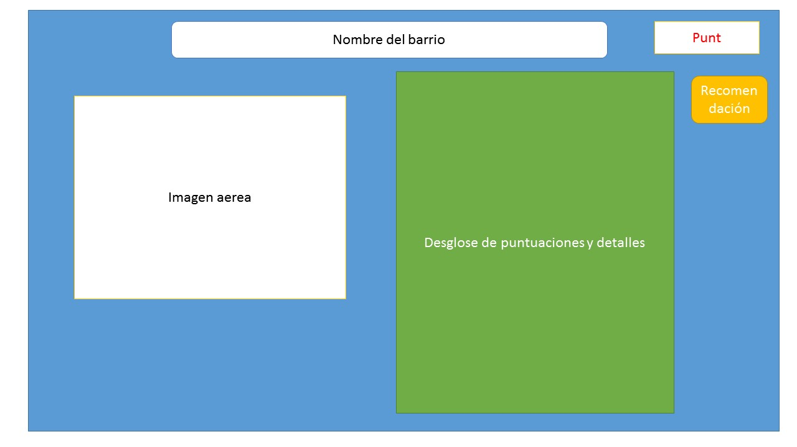

Descripcion:
Nuestra aplicacion mostrara un buscador de barrios de la ciudad al iniciarse, despues de hacer la busqueda mostrara la puntuacion del barrio en base a un calculo dados los dataset de criminalidad, colegios cercanos ademas esta mostrara como sugerencia el barrio mas cercano con mejor puntuacion, en caso de haberlo.Cuando se vean los detalles del barrio mostrara tambien una vista aerea tipo google maps del mismo y el desglose de los datos obtenidos(indidce de criminalidad, colegios cercanos y sus puntuaciones.
Vistas:
Inicio
Busqueda Realizada
